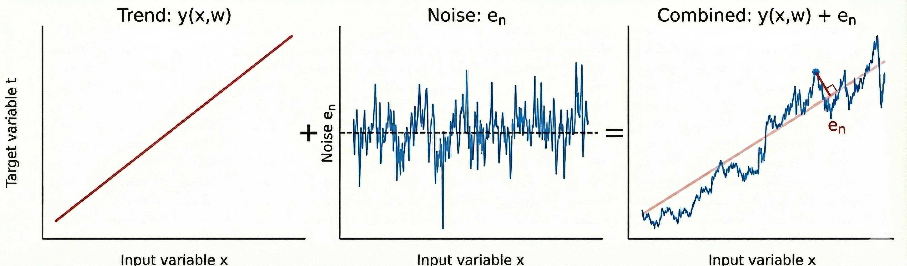

Chapter 1: Linear Models for Regression
This chapter mostly deals with linear models for regression and their basis functions (a fancy way of saying function on 'x'). This equation will come up a lot: \[ y(x) = w_0 + \sum_{i=1}^N w_i\,\phi\!\left({x}\right)\quad (1.1) \] where 'N' is the total number of features and \(w_i\) is the weight associated to the \(i\)-th feature.
Suppose we are asked to model the relationship between apartment size (in sq.ft) and price for a Brigade apartment project in Bangalore.
| Flat ID | Size x (sq.ft) | Total Price (₹ Lakhs) |
|---|---|---|
| F1 | 650 | 68 |
| F2 | 800 | 82 |
| F3 | 1100 | 105 |
| F4 | 1400 | 128 |
| F5 | 1800 | 167 |
| F6 | 2200 | 215 |
A simple straight-line model may not be sufficient to describe this data accurately. In real-world, the relationship between size and price is often nonlinear due to location effects, floor level, amenities, and demand variations across different size ranges etc etc. The below equation is a general expression of what we're trying to achieve:

Question
Show that the 'tanh' and the logistic sigmoid functions are related by:
\[ \tanh(a) = 2\,\sigma(2a) - 1 \]Hence show that a general linear combination of logistic sigmoid functions of the form:
\[ y(x,w) = w_0 + \sum_{j=1}^M w_j\,\sigma\!\left(\frac{x-\mu_j}{s}\right) \quad (1.101) \]is equivalent to a linear combination of \(\tanh\) functions of the form:
\[ y(x,u) = u_0 + \sum_{j=1}^M u_j\,\tanh\!\left(\frac{x-\mu_j}{s}\right) \quad (1.102) \]and find expressions relating the new parameters \(\{u_j\}\) to the original parameters \(\{w_j\}\).
Solution:
We know that the logistic function:
\[ \sigma(a) = \frac{1}{1 + e^{-a}} \]and the RHS can be written as
\[ 2 . \frac{1}{1 + e^{-2a}} - 1 => \frac{2e^{2a}}{1 + e^{2a}} - 1 \]solving the above equation gives us
\[ \frac{e^{2a} - 1}{e^{2a} + 1} \]which is nothing but \(\tanh(a)\) (a different form though)
We can rewrite the relationship as:
\[ \sigma(a) = \frac{\tanh\left(\frac{a}{2}\right) + 1}{2} \]Substitute this relation into equation (1.101):
\[ \begin{aligned} y(x,w) &= w_0 + \sum_{j=1}^M w_j\,\sigma\!\left(\frac{x-\mu_j}{s}\right) \\ &= w_0 + \sum_{j=1}^M w_j\cdot\frac{1}{2}\left[\tanh\!\left(\frac{x-\mu_j}{2s}\right) + 1\right] \\ &= \left(w_0 + \frac{1}{2}\sum_{j=1}^M w_j\right) + \sum_{j=1}^M \frac{w_j}{2}\,\tanh\!\left(\frac{x-\mu_j}{2s}\right) \end{aligned} \]Comparing this with equation (1.102), we identify the new parameters as:
\[ u_0 \;=\; w_0 \;+\; \frac{1}{2}\sum_{j=1}^M w_j \] \[ u_j \;=\; \frac{w_j}{2} \qquad (j = 1,\ldots,M) \]which aligns to eqn (1.102) (not sure if there's a printing mistake but you get the idea)
Continuing from our Brigade apartment example, here's how the actual data might look like

The above graph represents a real life scenario where there's always a noise associated with the target variable. This can be generalised by the below equation:
\[ t = y(x, \mathbf{w}) + \epsilon \]where \(\epsilon\) represents the Gaussian noise (adding it so we can generalise the equation).

In order to learn the spread or uncertainity (as \(y(x, \mathbf{w})\) will just predict a value but we're more interested in the distribution), we'll calculate the probability of the target variable given the input and parameters.
\[ p(t_n|x_n, \mathbf{w}, \sigma^2) = \mathcal{N}(t_n|y(x_n, \mathbf{w}), \sigma^2) \]where \(\sigma^2\) is the variance of the Gaussian noise.
Now assuming all the data points are independent, likelihood is:
\[ p(\mathbf{t}|\mathbf{X}, \mathbf{w}, \sigma^2) = \prod_{n=1}^{N} \mathcal{N}(t_n|y(x_n, \mathbf{w}), \sigma^2) \]where \(\mathbf{t}\) is the column vector representing the target values for all data points.
Taking the logarithm of the likelihood function, we get the log-likelihood:
\[ \ln p(\mathbf{t}|\mathbf{X}, \mathbf{w}, \sigma^2) = -\frac{N}{2}\ln \sigma^{2} - \frac{N}{2}\ln(2\pi) - \frac{E_D(\mathbf{w})}{\sigma^{2}} \]where \(E_D(\mathbf{w})\) is the sum-of-squares error function defined as:
\[ E_D(\mathbf{w}) = \frac{1}{2}\sum_{n=1}^{N} \left\{ t_n - \mathbf{w}^T \phi(\mathbf{x}_n) \right\}^2 \]Maximizing the log-likelihood is equivalent to minimizing the sum-of-squares error function.
\[ E(\mathbf{w}) = \frac{1}{2}\|\mathbf{t}-\Phi\mathbf{w}\|^2 = \frac{1}{2}(\mathbf{t}-\Phi\mathbf{w})^T(\mathbf{t}-\Phi\mathbf{w}) \] \[ \ln p(\mathbf{t}|\mathbf{w},\sigma^{2}) = \text{const} - \frac{E(\mathbf{w})}{\sigma^{2}} \] \[ \nabla_{\mathbf{w}} \ln p = - \nabla_{\mathbf{w}} \frac{E(\mathbf{w})}{\sigma^{2}} = 0 \] \[ \nabla_{\mathbf{w}} E(\mathbf{w}) = \nabla_{\mathbf{w}} \left[ \frac{1}{2}(\mathbf{t}-\Phi\mathbf{w})^T(\mathbf{t}-\Phi\mathbf{w}) \right] \] \[ \nabla_{\mathbf{w}} E(\mathbf{w}) = -\Phi^T(\mathbf{t}-\Phi\mathbf{w}) \] \[ \Rightarrow -\Phi^T\mathbf{t} + \Phi^T\Phi\mathbf{w} = 0 \] \[ \Rightarrow \Phi^T\Phi\mathbf{w} = \Phi^T\mathbf{t} \] \[ \Rightarrow \mathbf{w} = (\Phi^T\Phi)^{-1}\Phi^T\mathbf{t} \]Question
Show that the matrix \[ H = \Phi(\Phi^{T}\Phi)^{-1}\Phi^{T} \tag{1.103} \] takes any vector \( \mathbf{v} \) and projects it onto the space spanned by the columns of \( \Phi \). Use this result to show that the least-squares solution \[ \mathbf{y} = \Phi\mathbf{w}_{\text{LS}} = \Phi(\Phi^{T}\Phi)^{-1}\Phi^{T}\mathbf{t} \ \] corresponds to an orthogonal projection of the vector \( \mathbf{t} \) onto the manifold \( \mathcal{S} \).
Solution:
Let's define our matrix as \(H\) (the Hat Matrix). If we multiply it by any arbitrary vector \(\mathbf{v}\):
\[ \mathbf{u} = H\mathbf{v} = \Phi \underbrace{\left[ (\Phi^T\Phi)^{-1}\Phi^T \mathbf{v} \right]}_{\text{some vector } \mathbf{a}} \]The result \(\mathbf{u}\) is equal to \(\Phi \mathbf{a}\). By definition, any vector \(\Phi \mathbf{a}\) is a linear combination of the columns of \(\Phi\). Therefore, \(H\) maps any vector into the column space of \(\Phi\).
The least squares prediction is \(\mathbf{y} = H\mathbf{t}\). The residual (error) vector is:
\[ \mathbf{r} = \mathbf{t} - \mathbf{y} = (I - H)\mathbf{t} \]For the projection to be orthogonal, the residual \(\mathbf{r}\) must be perpendicular to the subspace (the columns of \(\Phi\)). We check the dot product \(\Phi^T \mathbf{r}\):
\[ \begin{aligned} \Phi^T \mathbf{r} &= \Phi^T (\mathbf{t} - \Phi(\Phi^T\Phi)^{-1}\Phi^T \mathbf{t}) \\ &= \Phi^T \mathbf{t} - (\Phi^T\Phi)(\Phi^T\Phi)^{-1}\Phi^T \mathbf{t} \\ &= \Phi^T \mathbf{t} - I \cdot \Phi^T \mathbf{t} \\ &= 0 \end{aligned} \]Since the dot product is zero, the residual is orthogonal to the column space.

In the previous problem (1.2), we assumed that every data point (apartment price) was equally reliable. However, in real-world scenarios, this is rarely the case.
For example, in our Brigade apartment dataset:
i. A price from a verified government sale deed is highly reliable (High weight).
ii. A price from an anonymous online posting might be noisy or inaccurate (Low weight).
To handle this, we assign a "weight" \(r_n\) to each data point. If a point is reliable, \(r_n\) is large; if it's noisy, \(r_n\) is small. This technique is known as Weighted Least Squares.
We collect these weights into a diagonal matrix \(R\) of size \(N \times N\). The off-diagonal elements are zero because we assume the noise in one price is independent of the others:
\[ R = \begin{bmatrix} r_1 & 0 & \cdots & 0 \\ 0 & r_2 & \cdots & 0 \\ \vdots & \vdots & \ddots & \vdots \\ 0 & 0 & \cdots & r_N \end{bmatrix} \]
Question
Consider a data set in which each data point \(t_n\) is associated with a weighting factor \(r_n > 0\), so that the sum-of-squares error function becomes
\[ E_D(\mathbf{w}) = \frac{1}{2}\sum_{n=1}^{N} r_n \left\{ t_n - \mathbf{w}^T \phi(\mathbf{x}_n) \right\}^2 \]Find an expression for the solution \(\mathbf{w}^*\) that minimizes this error function. Give two alternative interpretations of the weighted sum-of-squares error function in terms of: (i) data-dependent noise variance and (ii) replicated data points.
Solution:
First, it is helpful to express the error function in matrix notation. We introduce a diagonal matrix \(\mathbf{R}\) of size \(N \times N\) containing the weights:
\[ \mathbf{R} = \text{diag}(r_1, r_2, \dots, r_N) \]The weighted sum-of-squares error can now be written as:
\[ E_D(\mathbf{w}) = \frac{1}{2} (\mathbf{t} - \Phi\mathbf{w})^T \mathbf{R} (\mathbf{t} - \Phi\mathbf{w}) \]To find the minimizer \(\mathbf{w}^*\), we set the gradient with respect to \(\mathbf{w}\) to zero:
\[ \nabla_{\mathbf{w}} E_D(\mathbf{w}) = -\Phi^T \mathbf{R} (\mathbf{t} - \Phi\mathbf{w}) = 0 \]Rearranging the terms to solve for \(\mathbf{w}\):
\[ \Phi^T \mathbf{R} \Phi \mathbf{w} = \Phi^T \mathbf{R} \mathbf{t} \] \[ \mathbf{w}^* = (\Phi^T \mathbf{R} \Phi)^{-1} \Phi^T \mathbf{R} \mathbf{t} \]This is the solution for Weighted Least Squares. Note that if \(\mathbf{R} = \mathbf{I}\) (identity matrix), this reduces to the standard least squares solution found in Problem 1.2.
Recall that the standard sum-of-squares error comes from maximizing the likelihood of a Gaussian distribution with constant variance \(\sigma^2\).
If we assume that each data point \(t_n\) has its own specific variance \(\sigma_n^2\), the likelihood function becomes:
\[ p(\mathbf{t}|\mathbf{w}) = \prod_{n=1}^{N} \mathcal{N}(t_n | \mathbf{w}^T \phi(\mathbf{x}_n), \sigma_n^2) \]Taking the negative log-likelihood, we isolate the error term:
\[ \frac{1}{2} \sum_{n=1}^{N} \frac{1}{\sigma_n^2} (t_n - \mathbf{w}^T \phi(\mathbf{x}_n))^2 \]By comparing this to our weighted error function, we can see that:
\[ r_n = \frac{1}{\sigma_n^2} \quad \]Interpretation: The weight \(r_n\) represents the precision of the measurement. Points with high uncertainty (high variance) are given low weights, and points with high precision are given high weights.
Consider the case where all weights \(r_n\) are integers. The term:
\[ r_n \left\{ t_n - \mathbf{w}^T \phi(\mathbf{x}_n) \right\}^2 \]is mathematically equivalent to:
\[ \underbrace{\left\{ t_n - \mathbf{w}^T \phi(\mathbf{x}_n) \right\}^2 + \dots + \left\{ t_n - \mathbf{w}^T \phi(\mathbf{x}_n) \right\}^2}_{r_n \text{ times}} \]Interpretation: We can view weighted least squares as a standard least squares problem on a dataset where the \(n\)-th observation has been replicated \(r_n\) times. This gives that specific data point more "voting power" in determining the model parameters.
In the previous problems, we assumed our input data \(\mathbf{x}\) was perfect. But in the real world, data is often corrupted by noise.
The Intuition: Weights as Amplifiers
Imagine a linear model \(y = w_1 x_1 + \dots\). If a specific weight \(w_1\) is very large (e.g., 1000), a tiny amount of random noise in the input \(x_1\) gets multiplied by 1000, causing the prediction to swing wildly. This makes the model unstable and prone to overfitting.
The Strategy: Training with Noise
To prevent this, we can intentionally add random noise to the inputs during training. This forces the model to learn that "large weights are dangerous" because they amplify the noise. As we will prove below, this strategy is mathematically identical to simply adding a penalty on the size of the weights (L2 Regularization).
Question
Consider a linear model of the form \[ y(x, w) = w_0 + \sum_{i=1}^{D} w_i x_i \tag{1.105} \] together with a sum-of-squares error function \[ E_D(w) = \frac{1}{2}\sum_{n=1}^{N} \{\, y(x_n, w) - t_n \,\}^2 . \tag{1.106} \]
Now suppose that Gaussian noise \( \epsilon_i \) with zero mean and variance \( \sigma^2 \) is added independently to each input variable \( x_i \). Using the properties \[ \mathbb{E}[\epsilon_i] = 0, \qquad \mathbb{E}[\epsilon_i \epsilon_j] = \delta_{ij}\,\sigma^2, \] show that minimizing the expected value of \( E_D \) over the noise distribution is equivalent to minimizing the usual sum-of-squares error for noise-free inputs, but with an additional weight-decay regularizer in which the bias parameter \( w_0 \) is excluded from the penalty.
Solution:
First, let's express the model's prediction when it receives a noisy input \(\tilde{x}_{ni} = x_{ni} + \epsilon_{ni}\). Substituting this into the linear equation:
\[ y(\tilde{x}_n, w) = w_0 + \sum_{i=1}^{D} w_i (x_{ni} + \epsilon_{ni}) \]We can group the terms to separate the "clean" prediction from the noise:
\[ y(\tilde{x}_n, w) = \underbrace{\left( w_0 + \sum_{i=1}^{D} w_i x_{ni} \right)}_{y(x_n, w)} + \underbrace{\sum_{i=1}^{D} w_i \epsilon_{ni}}_{\text{Noise term}} \]For brevity, let's denote the noise term as \(\mathcal{N}_n = \sum_{i=1}^{D} w_i \epsilon_{ni}\). So, \(y_{noisy} = y_{clean} + \mathcal{N}_n\).
We want to minimize the expected error over the noise distribution. Let's substitute \(y_{noisy}\) into the sum-of-squares error:
\[ \tilde{E} = \mathbb{E} \left[ \frac{1}{2} \sum_{n=1}^{N} \{ y_{noisy} - t_n \}^2 \right] \] \[ \tilde{E} = \mathbb{E} \left[ \frac{1}{2} \sum_{n=1}^{N} \{ (y(x_n, w) - t_n) + \mathcal{N}_n \}^2 \right] \]Expanding the square term \((A+B)^2 = A^2 + 2AB + B^2\):
\[ \{ \dots \}^2 = \underbrace{(y(x_n, w) - t_n)^2}_{A^2} + \underbrace{2(y(x_n, w) - t_n)\mathcal{N}_n}_{2AB} + \underbrace{\mathcal{N}_n^2}_{B^2} \]We apply the expectation to each term individually:
- Term \(A^2\): Does not contain noise \(\epsilon\). So, \(\mathbb{E}[A^2] = (y(x_n, w) - t_n)^2\).
- Term \(2AB\): Contains the noise term \(\mathcal{N}_n\) which is linear in \(\epsilon\). Since \(\mathbb{E}[\epsilon] = 0\), the expectation of this whole cross-term is 0.
- Term \(B^2\): This is the expectation of the squared noise, \(\mathbb{E}[\mathcal{N}_n^2]\).
Thus, the total expected error simplifies to:
\[ \tilde{E} = \underbrace{\frac{1}{2} \sum_{n=1}^{N} (y(x_n, w) - t_n)^2}_{E_D(w)} + \frac{1}{2} \sum_{n=1}^{N} \mathbb{E}[\mathcal{N}_n^2] \]We need to solve \(\mathbb{E}[\mathcal{N}_n^2]\). Let's expand the squared sum using indices \(i\) and \(j\):
\[ \mathbb{E}\left[ \left( \sum_{i=1}^{D} w_i \epsilon_{ni} \right) \left( \sum_{j=1}^{D} w_j \epsilon_{nj} \right) \right] = \sum_{i=1}^{D} \sum_{j=1}^{D} w_i w_j \mathbb{E}[\epsilon_{ni} \epsilon_{nj}] \]Using the property \(\mathbb{E}[\epsilon_i \epsilon_j] = \delta_{ij} \sigma^2\), all terms where \(i \neq j\) vanish. We are left only with terms where \(i=j\):
\[ \sum_{i=1}^{D} w_i^2 \sigma^2 = \sigma^2 \sum_{i=1}^{D} w_i^2 \]Substituting this back into our error equation (summing over \(N\) data points):
\[ \tilde{E} = E_D(w) + \frac{1}{2} \sum_{n=1}^{N} \left( \sigma^2 \sum_{i=1}^{D} w_i^2 \right) \] \[ \tilde{E} = E_D(w) + \underbrace{\frac{1}{2} N \sigma^2}_{\lambda} \sum_{i=1}^{D} w_i^2 \]This is exactly the form of sum-of-squares error with an L2 Regularization term (Weight Decay). Note that the summation over weights starts from \(i=1\), meaning the bias \(w_0\) is excluded.